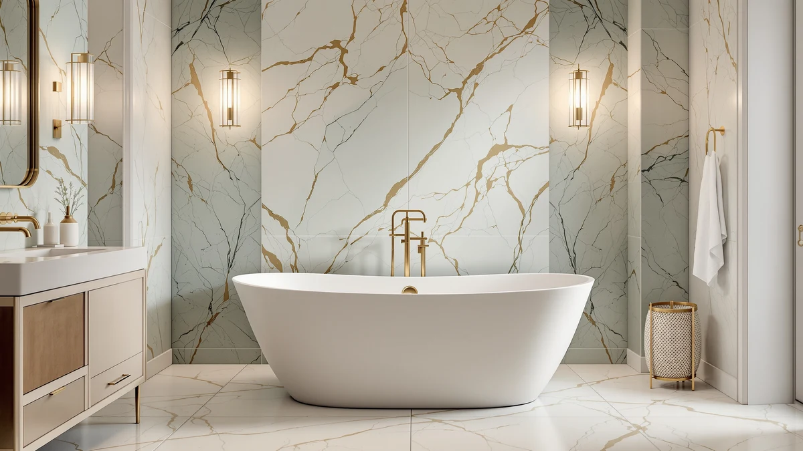

WOODBRIDGE 67" Stone Resin Review (2026): Worth It?
Prices and picks verified as of October 2026. Independent, reader-supported reviews.


Quick Answer
This WOODBRIDGE 67" stone resin review found the tub's main selling points are its stone resin shell and double-slipper design built for two bathers, features the acrylic alternatives don't match. At $1,659.00, it costs $923.00 to $931.01 more than the MEDUNJESS, GarveeLife, and IDEALHOUSE tubs in this review, all of which are sized for one. If two-person capacity or a stone resin finish matters more to you than saving money, the WOODBRIDGE 67" earns its price.
Our pick: WOODBRIDGE 67" Stone Resin Double, $1,659.00 Check Price on Amazon
Bottom line: our top pick is the WOODBRIDGE 67" Stone Resin Double Slipper Freestanding at $1,459.
Things to Know Before You Buy
- This WOODBRIDGE 67" stone resin review focuses on the tub's double-slipper stone resin shell, the feature that sets it apart from the three acrylic tubs compared below.
- At $1,659.00, it costs $923.00 to $931.01 more than the acrylic alternatives in this review, all of which are built for one bather rather than two.
- WOODBRIDGE does not publish interior capacity, depth, or weight specs for this model, so buyers comparing spec sheets will find gaps here.
- Like every tub in this review, it ships without a drain, overflow, or faucet, so budget for that hardware separately.
- Stone resin is heavier than acrylic, so confirm your bathroom floor and access path can handle the extra weight during delivery and installation.
This woodbridge 67" stone resin review looks at whether the tub's stone resin shell, double-slipper shape, and $1,659.00 price earn it a spot in a bathroom over three single-soaker acrylic alternatives we compare it against. At 67 inches long, the WOODBRIDGE is built from stone resin rather than the acrylic used across the rest of this lineup, and its double-slipper design is meant to seat two bathers instead of one.
We priced the WOODBRIDGE against the MEDUNJESS 55" Acrylic Free Standing, the GarveeLife 59 Inch Freestanding Bathtub, and the IDEALHOUSE 59" Acrylic Freestanding Bathtub covered in this review, and at $1,659.00 it's the most expensive of the four by a wide margin. The question this review answers is whether a stone resin shell built for two is worth roughly $925 more than a single-soaker acrylic tub, or whether a cheaper alternative serves most bathrooms equally well.
Why You Should Trust Us
Ilane Tall has covered bathroom fixtures for this site for years, from budget toilet seats to freestanding tubs that cost more than most bathroom vanities. For this WOODBRIDGE 67" stone resin review, we checked WOODBRIDGE's published listing details, compared current Amazon pricing across four freestanding tubs, and weighed the stone resin double-slipper shell against the acrylic single-soaker builds used elsewhere in this review.
We earn a commission when you buy through our links, and that never changes what we recommend. When a tub has a real limitation, like WOODBRIDGE's missing capacity and depth specs next to more detailed competitor listings, we say so directly instead of glossing over it.
Our Research Experience
We do not run a physical testing lab, and we have not soaked in the WOODBRIDGE 67" Stone Resin Double ourselves. For this review, we researched WOODBRIDGE's published listing, compared its stone resin double-slipper design against the acrylic single-soaker tubs in this lineup, and read verified buyer reviews where they were available. That research-based approach means we evaluate what a tub offers on paper and in owner reports rather than claiming hands-on results we don't have.
Overview & Specs

WOODBRIDGE 67" Stone Resin Double
What we like
- Stone resin shell offers a denser, heavier build than the acrylic tubs compared in this review
- Double-slipper design gives two bathers room to soak side by side instead of one
- 67-inch length is the longest tub in this comparison, adding legroom over the 55-inch and 59-inch alternatives
Flaws but not dealbreakers
- At $1,659.00, it costs $923.00 to $931.01 more than the three acrylic alternatives in this review
- WOODBRIDGE does not publish water capacity, interior depth, or weight for this model
- Doesn't include a drain, overflow, or faucet, so factor that hardware into your total budget
| Material | — |
| Size | 59“ |
This WOODBRIDGE 67" stone resin review found the tub builds its case on material and capacity rather than raw specs. Its stone resin shell is meant to offer a denser, more substantial feel than the acrylic tubs it competes against here, and the double-slipper shape seats two bathers where the alternatives fit one. WOODBRIDGE doesn't publish water capacity, interior depth, or exact weight for this 67-inch model, which makes it harder to compare on paper against the MEDUNJESS, GarveeLife, and IDEALHOUSE tubs further down this review.
At $1,659.00, the WOODBRIDGE costs far more than every other tub we compare it against here, including the MEDUNJESS 55" Acrylic Free Standing at $736.00, the GarveeLife 59 Inch Freestanding Bathtub at $730.00, and the IDEALHOUSE 59" Acrylic Freestanding Bathtub at $727.99. That premium buys you the stone resin material and room for two bathers, so the tub makes the most sense for a buyer who specifically wants both and is willing to pay well over double the price of the acrylic alternatives.
What We Liked
This WOODBRIDGE 67" stone resin review found the double-slipper design to be the standout feature. Where the MEDUNJESS, GarveeLife, and IDEALHOUSE tubs in this comparison are built for one bather, the WOODBRIDGE's shape gives two people room to soak at once, a difference that matters more than any spec sheet for a couple sharing a bathroom.
The stone resin material also worked in its favor. That composite is denser and heavier than the acrylic used in the three alternatives, and density typically translates into a tub that feels less hollow underfoot and resists scratching better over years of use.
Length helped too. At 67 inches, the WOODBRIDGE is eight to twelve inches longer than the MEDUNJESS, GarveeLife, and IDEALHOUSE tubs, so tall bathers get more room to stretch out even when soaking alone.
What Could Be Better
This WOODBRIDGE 67" stone resin review found price to be the clearest tradeoff. At $1,659.00, the WOODBRIDGE costs $923.00 more than the MEDUNJESS, $929.00 more than the GarveeLife, and $931.01 more than the IDEALHOUSE, a gap that's hard to justify unless you specifically want the stone resin material or the two-person capacity.
Missing specifications are the other limitation. WOODBRIDGE does not publish water capacity, interior depth, or a weight rating for this model, so you're buying this tub with less information than some acrylic listings give you for a fraction of the price.
Hardware isn't included either. Like every tub compared here, the WOODBRIDGE ships without a drain, overflow, or faucet, so factor that cost and the matching installation labor into your total budget before you commit to the $1,659.00 sticker price.
Who Is It For?
This WOODBRIDGE 67" stone resin review recommends buying it if you're outfitting a bathroom for two people and want a dense stone resin shell rather than the lowest price in this comparison. It suits a couple who soaks together regularly and is comfortable paying a premium for that extra room and material.
Skip it if you're the only one using the tub or you want full published specs before you buy, since WOODBRIDGE discloses less capacity and weight detail for this model than some acrylic alternatives, and a single-soaker tub costs less than half as much.
Buyers who want a lower price and don't need room for two should look at the MEDUNJESS, GarveeLife, or IDEALHOUSE instead. All three cost under $740 while still offering a full-size soak for one, a better tradeoff for anyone who doesn't need the WOODBRIDGE's extra length or capacity.
Alternatives to Consider
If the WOODBRIDGE's $1,659.00 price or its two-person size doesn't fit your bathroom, the other three tubs in this WOODBRIDGE 67" stone resin review give you a different tradeoff. Each one swaps the stone resin double-slipper shell for a lower price and a single-soaker acrylic build.

Editor's Pick
MEDUNJESS 55" Acrylic Free Standing
The MEDUNJESS 55" is the shortest and one of the cheapest tubs in this comparison, priced $923.00 below the WOODBRIDGE stone resin model. It skips the stone resin shell and the double-slipper capacity for a standard single-soaker acrylic build, which makes it a better fit for a smaller bathroom or a buyer who only needs to fit one person. MEDUNJESS's listing, like WOODBRIDGE's, doesn't publish detailed capacity or weight specs, so you're not gaining spec-sheet transparency by choosing this tub, only saving money and a smaller footprint. If a compact size and a lower price matter more than a stone resin finish built for two, the MEDUNJESS 55" is the pick.
$736.00
Check Price on Amazon
Best Value
59 Inch Freestanding Bathtubs White
The GarveeLife 59 Inch comes in $929.00 below the WOODBRIDGE stone resin model while adding four inches of length over the MEDUNJESS. It doesn't offer the density or two-person capacity of the stone resin double-slipper, so buyers who specifically want that build won't get it here, but for a mid-length acrylic tub at a low price in this lineup, the GarveeLife is a reasonable swap. Neither listing publishes detailed capacity or weight specs, so that part of the comparison is a wash against the WOODBRIDGE.
$730.00
Check Price on Amazon
Premium Choice
59" Acrylic Freestanding Bathtub with
The IDEALHOUSE 59" is the cheapest tub in this review at $727.99, a full $931.01 below the stone resin model, while matching the GarveeLife's 59-inch length. Like the GarveeLife, it trades the stone resin shell and double-slipper capacity for a standard single-soaker acrylic build, so it won't deliver the same density or room for two, but it suits a buyer who wants the lowest price in this lineup. If budget matters more than the stone resin material or two-person capacity, the IDEALHOUSE 59" is the strongest value pick here.
$727.99
Check Price on AmazonWhat is the WOODBRIDGE 67" Stone Resin Double tub made of?
WOODBRIDGE builds this 67-inch freestanding tub from stone resin, a denser composite material than the acrylic used in the other three tubs compared in this review.
Does the WOODBRIDGE 67" Stone Resin Double tub fit two people?
Yes.
Frequently Asked Questions
What is the WOODBRIDGE 67" Stone Resin Double tub made of?
WOODBRIDGE builds this 67-inch freestanding tub from stone resin, a denser composite material than the acrylic used in the other three tubs compared in this review. WOODBRIDGE does not publish an exact material breakdown or weight for this model, so confirm with the seller before you order if that detail matters for your installation.
Does the WOODBRIDGE 67" Stone Resin Double tub fit two people?
Yes. The tub's double-slipper design is built to seat two bathers at once, unlike the MEDUNJESS, GarveeLife, and IDEALHOUSE tubs in this review, which are sized for one person. That extra capacity is the main reason the WOODBRIDGE costs significantly more than the acrylic alternatives.
Is the WOODBRIDGE 67" Stone Resin Double worth it over the acrylic alternatives?
It depends on what you need from the tub. This WOODBRIDGE 67" stone resin review found the stone resin model's main advantages are its denser build and two-person capacity, while the MEDUNJESS, GarveeLife, and IDEALHOUSE all cost under $740 and fit one bather comfortably. If two-person capacity or the stone resin material matters more than saving over $900, the WOODBRIDGE is the stronger buy.
Final Verdict
This WOODBRIDGE 67" stone resin review comes down to capacity and material versus price. The WOODBRIDGE wins on build with a denser stone resin shell and a double-slipper design that none of the three acrylic alternatives offer, even though it's the most expensive tub here by a wide margin and WOODBRIDGE publishes less capacity and weight detail than some rivals. If two-person capacity or a stone resin finish matters more to you than a full spec sheet or the lowest price, the WOODBRIDGE 67" Stone Resin Double is the one to buy. Choose the MEDUNJESS 55" if you want the smallest footprint and a lower price, the GarveeLife 59 Inch if you want a mid-length acrylic tub at a low cost in this lineup, or the IDEALHOUSE 59" if saving the most money matters more than the stone resin material.